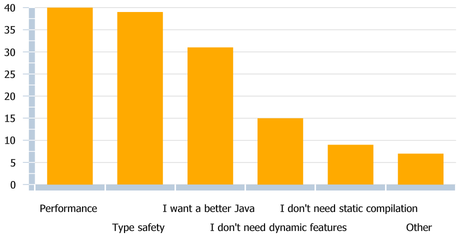

Groovy 2: Type checking to the rescue!
Cédric Champeau, VMware
SpringOne2GX, October 17th, 2012
@CedricChampeau
About me
Past : Groovy contributor
- Bugfixes
- Modules: @Bytecode AST xform, GFreeMarker
- Core: compilation customizers, @xInterrupt, ...
- Used Groovy as a DSL for natural language processing
Present: Core Groovy committer
- Working on bugfixes but main focus on Groovy 2.0
- Static type checking
- Static compilation
Follow me
About Groovy 2
Modularity
- several jars for modules (swing, ant, xml, json, ...)
- groovy.jar now 3MB
- extension modules
JDK 7 enhancements
- project coin
- invoke dynamic support (use -indy jars)
Static theme
- Static type checking
- Static compilation
Static type checking
Goal
- Find errors at compile time (fail early)
- because lots of code do not use dynamic features of Groovy
- so many bugs can be discovered before production
- Make java developers even happier
Turn the compiler grumpy
- Report typos
- missing method/property
- Extension methods (aka DefaultGroovyMethods)
- Type check assignments
- Perform type inference
- method/closure return type inference
- generics type inference
Static Type Checking
It's optional
Triggered using @TypeChecked annotation
Annotate a class or a method
Static type checking basics
Type checking options
if set on a class, type checks:
- the whole class
- inner classes
- closures defined in the class
if set on a method, type checks:
- the method only
- closures defined in the method body
You can prevent some code from beeing type checked:
Type inference (1/3)
def with list literals
Type inference (2/3)
Verify that declared types are compatible with assignments
Type inference (3/3)
LUB = Lowest Upper Bound (also called Least Upper Bound)
- represents the "common super type"
- granularity is the class + interfaces
Instanceof type inference
Type checked Grooviness (1/4)
Groovy constructors
Map-style constructors
Type checked Grooviness (2/4)
Closure return type inference
Closure arguments
Type checked Grooviness (3/4)
Implicit toString at return
- works for assignments too
- only for String, boolean and Class
But this is not valid
Type checked Grooviness (4/4)
Compatible with @AST transformations
True as long as the AST transformation runs before the INSTRUCTION_SELECTION phase
Flow typing
- Use type inference to remove the need for explicit casts
- If using totally different types with same variable, bad practice
What's cooking?
Planned for Groovy 2.1
- Support for @DelegatesTo
- Improved DSL type checking
Wishlist
- ability to enable @TypeChecked by default
- probably through CompilerConfiguration
Static type checking gotchas
Dynamic vs Static
Static type checking in a dynamic language?!
- by definition, dynamic features are not compatible
- metaclass, categories, builders, mocks...
- Metaclasses can be changed from any thread
- even if you change the metaclass in a not statically checked method
- the changes won't be "visible" to a static type checker
Closure parameter types
What's wrong with this code?
Is the role of the receiver the same in this code?
Closure shared variables (1/2)
- Tracking assignments of closure shared variables
- The type checker enforces "good practice"
- ensure that method calls are only possible on the LUB of all assignments
Closure shared variables (2/2)
This is allowed
Closure delegates and strategy
In 2.0
- Only "with" is supported
- No support for delegate
- No support for strategy
In 2.1 (upcoming)
- User may "help" the type checker
- Uses the @DelegatesTo annotation
Method selection gotchas (1/3)
Dynamic vs static
- In dynamic Groovy, methods are selected at runtime
- In dynamic Groovy+STC, it's still the case, yet the compiler tries to find them at compile time
- By definition, the type checker is wrong!
What's wrong with this (statically checked) code?
Method selection gotchas (2/3)
Step 1: you need to help the compiler
Method selection gotchas (3/3)
Step 2: you can remove the casts!
Why do you want static compilation?
Results from a survey before we started working on static compilation

Why static compilation?
If you do static type checking...
- you cannot ensure dynamic semantics
- so why can't you statically compile ?
Benefits
- Static type checking (type safety)
- Improved performance
- not everyone has JDK7+ (InvokeDynamic)
- Bytecode size (work on progress)
- Immunity to monkey patching (useful for framework developers)
But you loose...
- Dynamic features (categories, metaclasses, ...)
- Dynamic method dispatch
- Dynamic Groovy semantics (part of)
Static compilation in Groovy 2
Static compilation is optional
- Relies on the @TypeChecked AST transformation
- Built to be as close as possible as dynamic Groovy semantics
But there are important differences
- Unlike Groovy++, it's just static compilation
- no added features
- no grammar changes
- Features and design choices discussed with the community
Static compilation: how to use
Just use the @CompileStatic annotation instead of @TypeChecked
Generated bytecode is very close (if not equal) to what Java produces
CompileStatic and semantics
Does it follow the semantics of dynamic Groovy?
Short answer: no
Long answer: as close as possible
Problem is the dynamic dispatch
Static method dispatch (1/2)
What does the following code outputs?
- In dynamic Groovy, prints 'DATE'
- Passes type checking thanks to flow typing
- Prints 'DATE' with static compilation too!
Static method dispatch (2/2)
Be careful!
Compat with extension modules (1/2)
Static compilation (thus static type checking) is compatible!
Define an extension
Write the descriptor file
Compat with extension modules (2/2)
Static compilation (thus static type checking) is compatible!
Use it in your statically compiled code!
Inside the type checker (1/2)
How does it work?
- It's an AST transformation!
- Technically, it doesn't really transform anything but it makes intensive use of node metadata (see ASTNode#getNodeMetaData)
- runs at instruction selection phase (late)
- Some compiler framework changes were needed to support
- regular compilation
- invokedynamic (1.7+ JVMs)
- static compilation
Inside the type checker (2/2)
Node metadata
- Groovy allows storing arbitrary metadata on each AST node
- The type checker uses this facility to store type information
- For details, see org.codehaus.groovy.transform.stc.StaticTypesMarker
Static compilation
- Puts additional node metadata (see org.codehaus.groovy.transform.sc.StaticCompilationMetadataKeys)
- Performs AST transformations (sometimes generates optimized bytecode directly)
Testing the type checker (1/2)
ASTTest transformation
- Developped to help testing the type checker
- An AST transform aimed at testing any AST transformation
Testing the type checker (2/2)
ASTTest transformation
Thank you!
Slides written using deck.js
http://melix.github.com
←
→
/
#